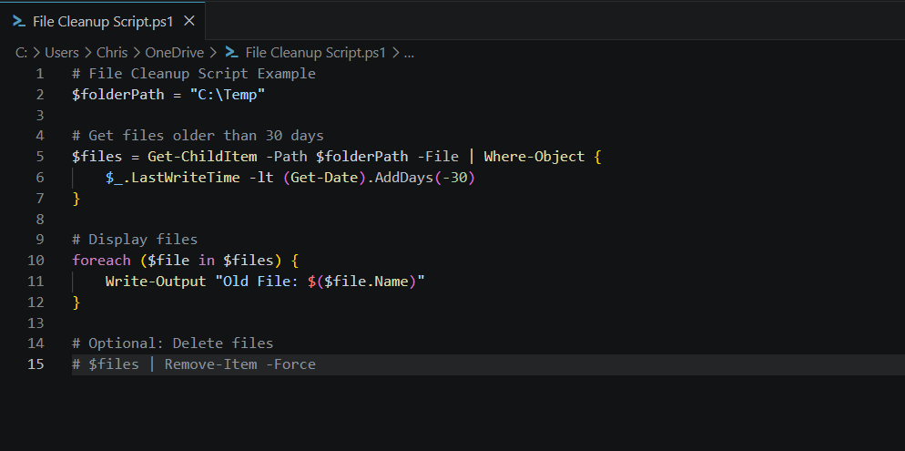
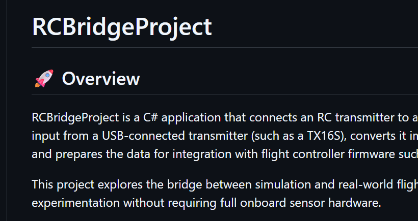

Projects
Projects & Engineering Work
Below are examples of real-world engineering, automation, and development work demonstrating my experience in both infrastructure and software solutions.
Infrastructure Automation Toolkit

Overview: Developed automation tools to streamline system administration tasks across Windows server environments. These automation solutions reduced repetitive manual processes, improved consistency between systems, and simplified administrative workflows for ongoing infrastructure support. Additional scripting improvements allowed maintenance operations to be completed more efficiently while reducing the likelihood of human error during deployment and management tasks.
Key Contributions:
- Built PowerShell scripts to automate routine administrative processes
- Reduced manual workload and improved operational consistency
- Standardized common tasks across multiple systems
Technologies Used: PowerShell, Windows Server
Enterprise Network Modernization
Overview: Participated in large-scale infrastructure upgrades and network redesign efforts supporting enterprise environments. These modernization projects focused on improving reliability, scalability, and communication between systems while supporting business continuity and long-term operational growth. Infrastructure improvements included server upgrades, hardware refreshes, and network optimization initiatives designed to improve performance and resiliency across multiple locations.
Key Contributions:
- Migrated environments from Windows Server 2012 R2 to 2022
- Designed improvements for scalability and high availability
- Implemented updated network topology and communication systems
Technologies Used: Cisco, Fortinet, Windows Server
GitHub & Collaborative Development

Overview: Active contributor to software development projects using Git and GitHub workflows for source control and collaboration. Development activities included maintaining repositories, participating in issue tracking, reviewing code changes, and documenting project functionality for future improvements. These collaborative workflows improved version control practices and supported organized development efforts across multiple projects and environments.
Key Contributions:
- Submitted pull requests and participated in issue tracking
- Collaborated on code improvements within shared repositories
- Applied version control best practices in development workflows
Repository:
https://github.com/cmathiswausau
SQL Reporting & Data Analysis Solutions
Overview: Developed database queries and reporting solutions to support operational decision-making and improve visibility into infrastructure performance. Reporting tools were designed to organize collected information into useful data sets that could be reviewed for troubleshooting, planning, and optimization purposes. These solutions helped improve data accessibility and supported more informed technical decision-making processes.
Key Contributions:
- Created SQL queries to extract and analyze system data
- Built reporting tools for improved visibility into infrastructure performance
- Delivered actionable insights for system optimization
Technologies Used: SQL Server